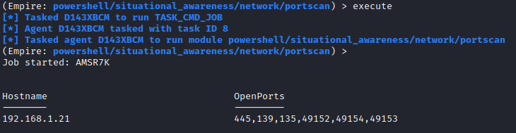

/network/portscan
Github:
https://github.com/PowerShellMafia/PowerSploit/blob/master/Recon/Invoke-Portscan.ps1Does
a simple port scan using regular sockets, based (pretty) loosely on nmap
(Empire)> usemodule situational_awareness/network/portscan
(Empire)> info
(Empire)> set Hosts [TargetIP]
(Empire)> execute
